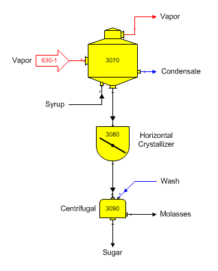

Massecuite Crystallizer A crystallizer can be used to represent the holding tank for massecuite going to the centrifugals. This can be used to account for the small amount of cooling and crystal growth time that occurs in the tank before the massecuite enters the centrifugal. The diagram below shows a horizontal crystallizer that represents a holding tank between a pan and a centrifugal.

Supersaturation, temperature out and color rise can be specified for the crystallizer to represent the condition of the massecuite as it leaves the holding tank and enters the centrifugal. The window below shows the Crystallizer Properties window for the horizontal crystallizer that represents the holding tank.